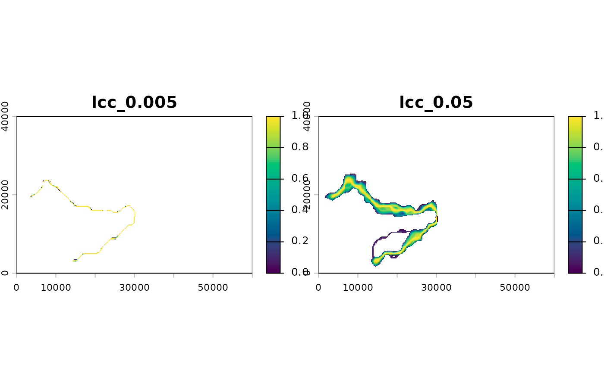

Sums the accumulated cost surfaces of the two sites, rescales the total to
0-1, keeps the cheapest q share of cells, and turns the kept values into
weights: 1 on the least cost route and 0 at the edge of the corridor.
Larger q gives a broader corridor that takes in more alternative routes.
Arguments
- acc
Accumulated cost surfaces from
accumulated_cost().- from, to
Site IDs (layer names of
acc).- q
Share of cells to keep, for example
0.001(a narrow corridor) to0.05(broad). Several values give one layer each.
Examples
# \donttest{
ex <- corridor_example()
tr <- make_transition(ex$resistance)
acc <- accumulated_cost(tr, ex$sites[ex$sites$site %in% c("M01", "M12"), ])
w <- lcc_weights(acc, "M01", "M12", q = c(0.005, 0.05))
terra::plot(w, col = hcl.colors(100, "viridis"))

# }